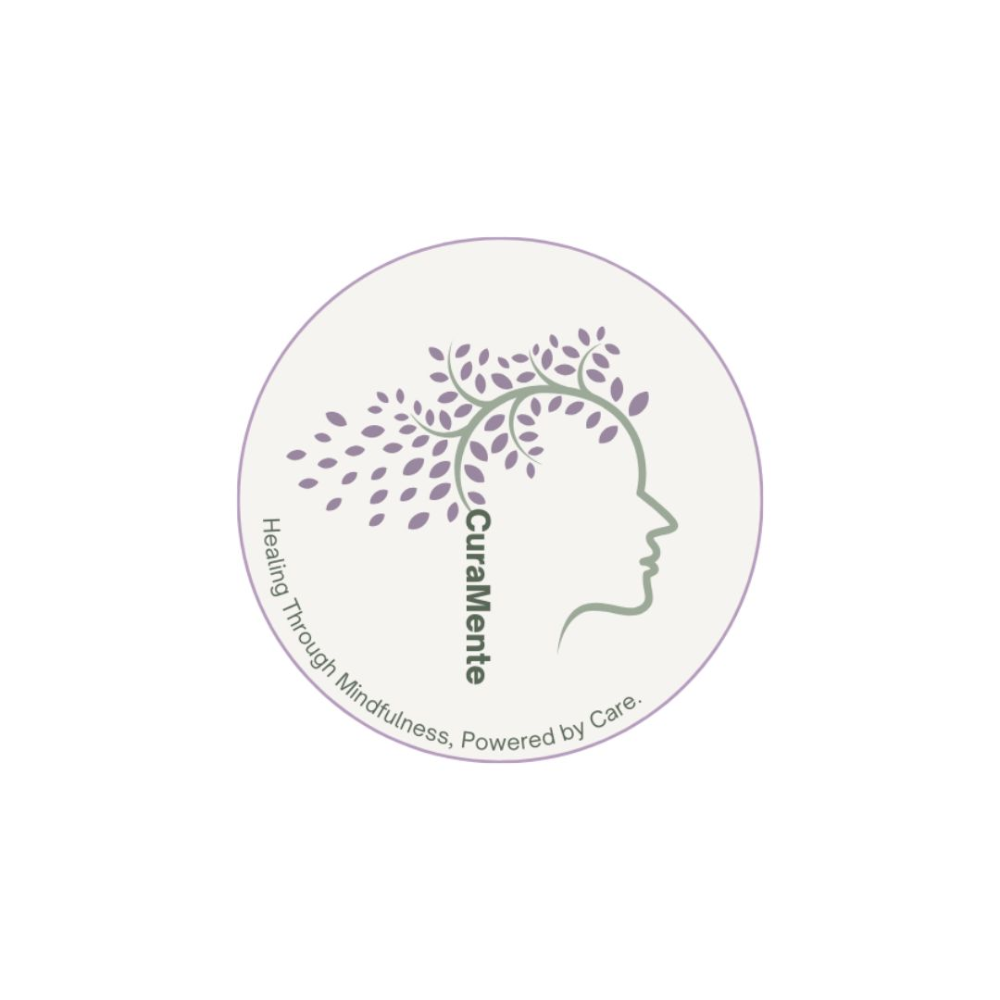
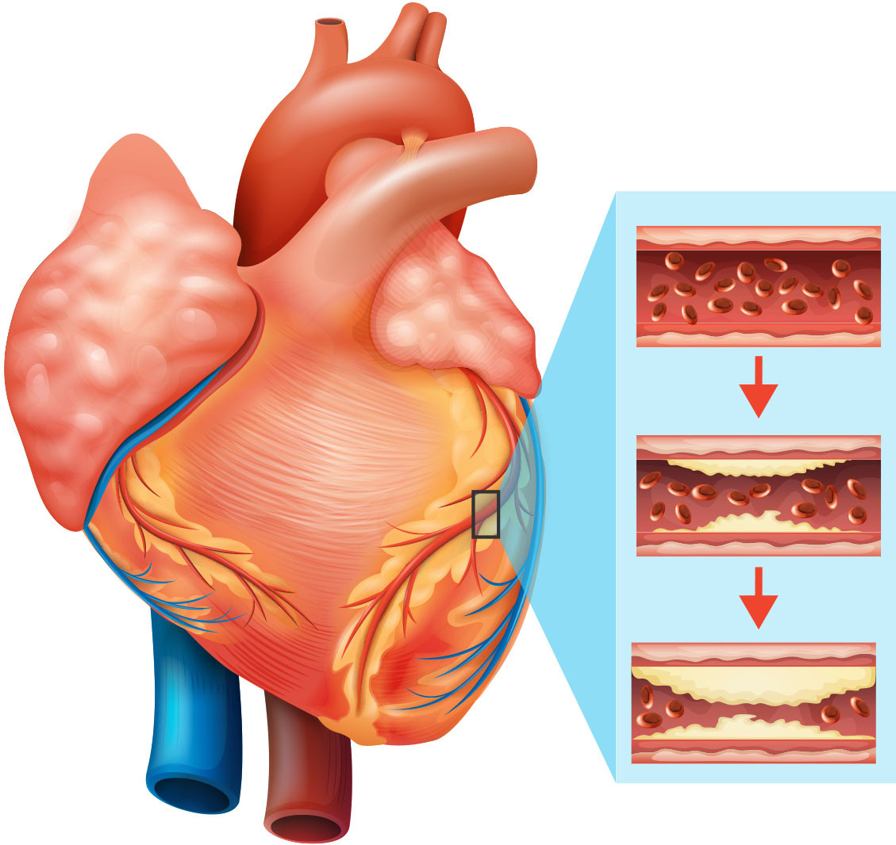

A collection of projects exploring how thoughtful design, research, and data can create more inclusive digital experiences.
INFO 615: Designing with Data
A UX experiment analyzing how recommendation and review design changes influence user engagement and interaction patterns.
View Case Study
INFO 881: HCI/UX Capstone
An accessibility-focused platform helping users evaluate public spaces through inclusive, environment-based reviews and insights.
View Case StudyINFO 608: Human-Computer Interaction
A UX redesign improving application status transparency to enhance clarity and confidence for job seekers.
View Case Study
DSCI 521: Data Analysis & Interpretation
A data analysis project examining how COVID-19 disrupted airline operations and financial performance, using exploratory analysis to reveal patterns in delays, cancellations, and recovery trends.
View Case Study
INFO 693: Human-AI Interaction
An AI-powered mental health platform focused on improving access to personalized support through intelligent matching and guided tools.
View Case Study
DSCI 521: Data Analysis & Interpretation
Analyzed a cardiovascular dataset to predict disease using Logistic Regression (PCA), KNN, and Random Forest. Findings highlighted blood pressure as a primary risk factor.
View Case Study